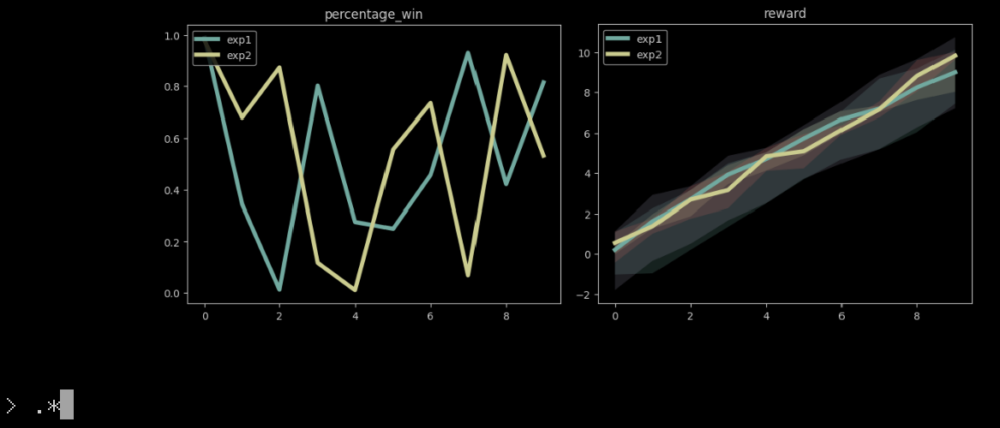

Introducing Kittyplot
Kittyplot is a program designed to plot experiment data in the kitty terminal using the kitty graphics protocol, primarily for use on HPC clusters.

Plots are rendered in parallel using matplotlib, and users can zoom into different regions of the plots my setting x and y limits using their editor. I use prompt_toolkit to accept regexp input and I override the tab-completion to instead display a list of all metrics that are matched by the current regexp.
This will not be a well-maintained repo for the forseeable future and not a simple library one can pip install. It’s merely a public copy of the script I use for visualizing experiment data over SSH without port-forwarding or running a web browser on my local machine. Kittyplot is only a few hunderd lines and is designed to be directly modified for user needs.
I was initially inspired to make kittyplot when I got fed up with tensorboard taking 20+ minutes to load all the experiment data I was working with. I loved tensorboard solely for the purpose of monitoring metrics specified by a regexp, so I modified my experiments to stream all the metrics to a csv and wrote kittyplot to monitor them. Now, I can create, view, and save plots directly from my ssh connection.